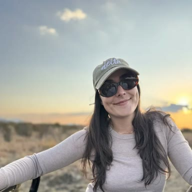
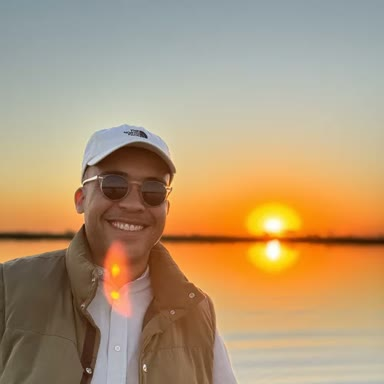

9 nightsJun – Sep
The Flood Route
Maun → Jao → Khwai → Chobe
Poled through the Delta at peak water, then north to the river where the dry season pulls every elephant in the region down to one bank.
From £8,950pp, all flights
Owner-run · Gaborone, Botswana
We are a husband-and-wife consultancy in Gaborone. Every camp on this site, we have slept in — most of them this year.
Our partners
01 — Why us
We live four hours from the airstrip. When a camp changes managers, rebuilds its decks or quietly stops being worth the money, we know within the week — because we were there, or because the guide who took us out last season called to tell us.
02 — Sample journeys
Starting points, not packages. Every route is rebuilt around your dates and your pace.
9 nightsJun – Sep
Maun → Jao → Khwai → Chobe
Poled through the Delta at peak water, then north to the river where the dry season pulls every elephant in the region down to one bank.
7 nightsAug – Oct
Kasane → Chobe → Linyanti → Vic Falls
The densest elephant population on earth, watched from a boat at eye level, and three nights above the gorge to finish.
8 nightsMay – Sep
Maun → Khwai → Selinda → Linyanti
Built around the denning season. Private concessions, off-road permitted, and a guide who has followed the same pack for six years.
03 — The thing nobody tells you
A camp is a building. What you are actually buying is the guide, the concession and the month.
Two lodges twenty minutes apart can offer completely different safaris, because one holds a private concession where you may drive off-road at night and the other sits in a public park where you may not. That distinction is worth more than any thread count.
Kristy & James Briscoe — founders
04 — When to come
Botswana floods in its driest month. That one fact decides your dates, your camps and a third of your budget.
05 — Where we go
Tap a region to see what it’s for, and when it’s at its best.
06 — Who we are
“I will tell you when a camp isn’t worth it. That is the entire reason to use someone who lives here.”
Beyond the Baobab is Kristy and James Briscoe — a husband-and-wife team who live in Gaborone, plan every journey by hand and answer their own phones seven days a week. No consultants, no queue, no desk on another continent.
Kristy & James Briscoe — founders

Kristy Briscoe
A former litigation attorney who traded the courtroom for the Delta and never looked back. Kristy designs every itinerary herself, mostly for travellers from Europe and America, and is the person who answers when you call.

James Briscoe
Born and raised in Botswana. James co-founded Sediba Sa Rona, the first 100% citizen-owned lodge in the Okavango Delta — so the access we promise comes from building a business among these guides, owners and concessions, not from a brochure.
07 — Our stake in it
Co-founding a citizen-owned lodge in the Delta changes how we read every camp we send you to. We know which concessions genuinely protect their wildlife, which put real money back into the community alongside them, and which only say they do — and we tell you plainly when one falls short.
“Botswana has always been world class. I’m just making sure the world knows it.”
James Briscoe — co-founder
08 — Guest words
Recent guests, in their own words.
“From our first email, we knew we were in good hands. Beyond the Baobab planned everything so smoothly that we didn’t have to worry about a thing. Flights, transfers, lodges—everything was taken care of. It was clear they really listened to what we wanted, and the whole trip felt effortless. If you want a safari without the stress of planning, this is the team to trust!”
“Flying over the Delta was something else! Seeing elephants and hippos from the air was just magical. Kristy made everything so easy, from the flights to the incredible lodges, where we were completely spoiled with amazing food, stunning views, and the most comfortable stays. The highlight? A helicopter ride over the Delta—hands down one of the coolest things we’ve ever done.”
“What made my safari special was the guide, Kane. His knowledge of the wildlife, landscapes, and even local traditions made every game drive exciting. He had an amazing way of spotting animals and explaining their behaviors in a way that made us feel like part of the wild. Thanks to Beyond the Baobab, this wasn’t just a trip, it was an experience I’ll never forget.”
“I wanted a safari that felt safe and easy but still full of adventure, and Kristy made it happen. From the start, everything was taken care of. Warm welcomes, smooth transfers, and amazing guides who made me feel completely at home. The lodges were beautiful, and I always felt comfortable, even traveling alone. It was the perfect mix of freedom and support, and honestly, one of the best things I’ve ever done for myself!”
“Going on a walking safari with Beyond the Baobab was one of the most exciting things I’ve ever done. Being on foot made me feel so connected to nature. We saw animal tracks up close, listened to the sounds of the bush, and learned so much from our guide. It was a completely different way to experience the wild. If you love adventure, don’t miss this!”
“I wanted a mix of adventure and relaxation, and Beyond the Baobab created the perfect trip for me. Between game drives, I got to do yoga in the most peaceful settings, sometimes with elephants in the distance! The lodges had spa treatments and quiet spaces to unwind after a day of exploring. It was the best mix of excitement and calm, and I came home feeling refreshed and inspired.”
09 — Field notes
Camp report
The rooms are extraordinary and the guiding has not kept pace. Who it suits, and who it doesn’t.
14 July 2026 · 6 min
Field note
Peak water is beautiful, and it is the most expensive, most crowded, coldest month of the year.
2 June 2026 · 4 min
Field note
Ndao has poled the same channels for nineteen years. He knows where the water will be before the hydrologists do.
28 April 2026 · 7 min
How it works
No account managers, no handovers. Kristy takes you from the first email to the airstrip.
Your rough dates, who’s travelling and what would make the trip. Kristy reads every enquiry herself.
Not a template, an actual itinerary with named camps and reasons, usually back with you within a day or two.
Swap a camp, change the pace, ask anything. We keep shaping it until it’s the trip you actually want.
On the ground in Botswana, reachable seven days a week, if anything needs handling in the moment.
Peace of mind
Full terms and financial protections are confirmed in writing before you pay a penny.
Your money is held and protected, with clear written terms agreed before you pay a penny.
Kristy designs your trip herself. No junior consultants, no call centre, no handovers.
We’re in Botswana the whole time you are, reachable seven days a week while you travel.
Transparent deposits, staged payments and a written cancellation policy. No surprises.
Good to know
First time to Africa? These cover the essentials. Anything else, just ask Kristy.
Very. Botswana is one of Africa’s most stable, lowest-crime countries, and the camps are remote, well-staffed and secure. The real risks on safari are the ordinary ones — sun, an early start, a long transfer — and your guides handle all of them. We’re on the ground and reachable seven days a week the whole time you’re travelling.
It’s the single biggest decision, which is why we built the season guide above. In short: June to September for peak Delta water and classic game viewing, or December to April for green-season newborns, birds and the best rates. Tell us your dates and we’ll tell you honestly what they’ll get you.
Parts of northern Botswana are malarial, so most guests take antimalarials — a travel clinic or your GP will advise for your exact route and dates, and we’ll flag which areas on your itinerary carry a risk. We’re not medics, so please confirm anything health-related with a professional.
Most guests fly into Johannesburg or Cape Town, connect to Maun or Kasane, then reach camp by light aircraft. We build every internal flight and transfer into your itinerary so the days join up — you never have to piece the logistics together yourself.
Botswana is a premium, low-volume destination; most of our trips land between £7,000 and £15,000 per person with all internal flights included. That covers camps, meals, guided activities and light-aircraft transfers. International flights, visas and travel insurance sit on top. You’ll see the full picture before you commit to anything.
Often, yes — it depends on the ages and the camps. Some welcome children and run proper family activities; others set a minimum age. Tell us who’s travelling and we’ll only put forward camps that genuinely suit your group.
For peak season (June to September) the best camps go 12 to 18 months out. Green and shoulder season can come together later. If your dates are fixed, earlier is always safer — but send us what you have and we’ll tell you what’s still open.
Enquire
Kristy replies personally, usually within a day. If your dates and budget don’t fit the trip you have in mind, she will say so in the first email rather than the fifth.
kristy@beyondthebaobab.com
+267 71 288 476 · Gaborone, Botswana